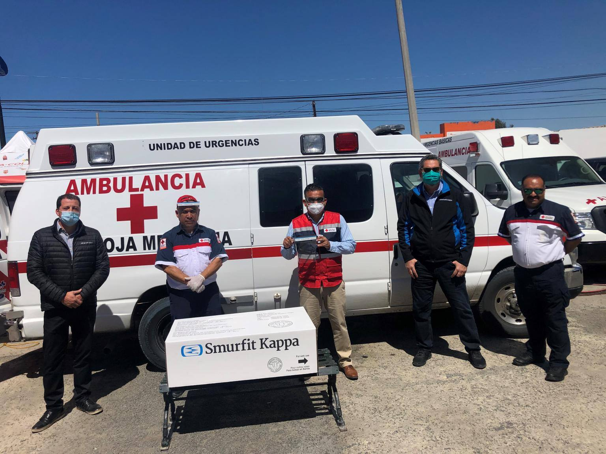

Our Team possesses the resources to Fight COVID-19 with a sustainable and environmentally friendly options. We offer a range of resources from corrugated packaging to allow for volunteers to transfer resources and supplies to those in need. We also offer a range of products ranging from face masks and face shields to protect our front line workers, specifically in Grocery Stores. who are working extremely long hours to make sure that people at home, stay home.
SENIOR SUPPORT THROUGH SERVICE: Volunteers can have an impact by increasing awareness of senior services, promoting health and wellness workshops, mentoring youth or by providing skills-based support to build capacity in community-based senior service organizations. To volunteer with any of these NYC Department for the Aging programs, please visit their website NYC Service.
If you would like more information, please email the Volunteer Resource Center at volunteer@aging.nyc.gov or call 212-602-4464.